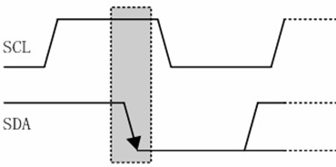
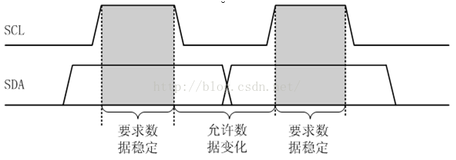
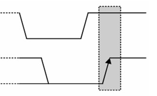

I²C和SPI相比通信协议没那么简单，但是用的线比较少，因此封装尺寸和耗电量可以减少。
另外，注意要读“I平方C”或者“IIC”，不要读“I二C”，这就和读“C井”一样不专业（正确读法是“C sharp”）。
IIC的接线
IIC只使用了两根线（全部都采用开漏输出，上拉电阻），串行数据线（SDA）和串行时钟线（SCL）。
- SDA：用于传输数据，连接从设备的SDA
- SCL：时钟信号，用于达成关于通信速度的共识，连接从设备的SCL
由于只有两根线，所以通过类似SPI那样通过片选线来选择要与之通信的芯片的方式就不可行了，幸运的是每个（其实应该是每批）IIC设备出厂时都附带了一个IIC地址，主设备在交换数据开始前会向总线上广播自己准备与之通信的IIC设备的地址，然后相关的IIC设备会启动，无关的IIC设备不会启用，通过这种方式，一组SDA-SCL的IIC总线上可以直接使用多个不同IIC地址的设备，当然缺点就是如果不另外进行配置1，一般不能安装多个同一批号的设备。
IIC的操作
IIC的操作其实是很毒的：
首先主设备要发一个开始传输信号，这个信号长这样

简单来说就是在SCL的高电平期间，SDA发送一个下降沿。
在得到这个信号后，所有IIC从设备都会被唤醒，然后等待接收接下来的信号。
接下来发送的是7位的IIC地址，发送方法如下：

简单来说，从设备会在SCL为高电平时读取SDA线上的数据位，而完全不理睬SCL为低电平的时候SDA上的电平变化等。
接下来发送一个代表主设备要进行读还是写操作的位。0代表写，1代表读。
接着主设备会将SDA设置为输入（通过上拉电阻拉高），等待从设备将SDA拉低，来表示从设备成功被选中（这一动作被称为“（从设备）发送ACK”）。
接下来根据发送的读/写操作位来进行读/写操作，
- 若主设备处于写模式，则会发送一个字节，然后等待从设备发送ACK，接着发送下一个字节，如此循环，直到主设备发送结束传输信号或者通信失败（ACK主设备迟迟等不到从设备的ACK，则认为发送失败）。
- 若主设备处于读模式，则由从设备发送一个字节，主设备发送ACK，接着从设备发送下一个字节，如此循环，直到主设备发送结束传输信号。
主设备发送停止信号，停止信号长这样：

简单来说就是在SCL的高电平期间，SDA发送一个上升沿。
1. 另外配置的案例：比如常用的EEPROM芯片的IIC地址中，前四个地址位都是1010，但后三个地址位可以用硬件连接决定，所以可以最多连接多达8个EEPROM芯片。 ↩
图片来源. https://www.cnblogs.com/bixiaopengblog/p/7469536.html ↩